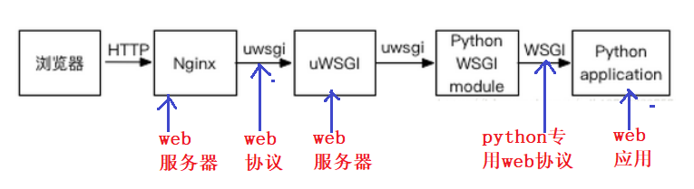

# Django
Django是一个Web框架，框架的作用在于处理request和reponse，其他的不是框架所关心的内容。所以如何部署
Django不是Django所需要关心的。
# 什么是 WSGI
WSGI是一种python专用 的web协议 和http类似WSGI 实质：
WSGI是一种描述 web 服务器（如nginx，uWSGI web服务器）如何与web框架（如用Django、Flask框架写的程序）通信的规范、协议
WSGI定义了使用python编写的web app(django)与web server（uWSGI）之间接口格式
# 为什么需要 web 协议
不同的框架有不同的开发方式，但是无论如何，开发出的 应用程序 (
django) 都要和服务器 (nginx) 程序配合 ，才能为用户提供服务这样， 服务器程序 (
nginx) 就需要为不同的框架提供不同的支持，只有支持它的服务器才 能被开发出的应用使用，显然这是不可行的。
web协议本质：就是定义了Web服务器和Web应用程序或框架之间的一种简单而通用的接口规范
# 什么是 uWSGI
uWSGI是一个全功能的 HTTP 服务器，实现了WSGI协议、uwsgi协议、http协议等。
# uWSGI 作用
它要做的就是把
HTTP协议转化成语言支持的网络协议，比如把HTTP协议转化成WSGI协议，让Python可以直接使用。
# uWSGI 特点
轻量级，易部署，性能比
nginx差很多
注意 ：
- 如果架构是
Nginx+uWSGI+APP，uWSGI是一个中间件 - 如果架构是
uWSGI+APP，uWSGI是一个服务器
# Nginx
Nginx是一个 Web 服务器，其中的 HTTP 服务器功能和uWSGI功能很类似但是
Nginx还可以用作更多用途，比如最常用的反向代理、负载均衡、拦截攻击等，而且性能极高
# Django + Uwsgi + Nginx 部署的作用
# Django + Uwsgi + Nginx 方案

# 请求处理整体流程
nginx接收到浏览器发送过来的http请求，将包进行解析，分析 url- 静态文件请求：就直接访问用户给
nginx配置的静态文件目录，直接返回用户请求的静态文件(html/css/js/图片) - 动态接口请求：那么
nginx就将请求转发给uWSGI，最后到达django处理
# 各模块作用
-
nginx：是对外的服务器，外部浏览器通过url访问nginx，nginx主要处理静态请求 -
uWSGI：是对内的服务器，主要用来处理动态请求 -
uwsgi：是一种web协议，接收到请求之后将包进行处理，处理成wsgi可以接受的格式，并发给wsgi -
wsgi：是python专用的web协议，根据请求调用应用程序（Django）的某个文件，某个文件的某个函数 -
Django：是真正干活的，查询数据等资源，把处理的结果再次返回给WSGI，WSGI将返回值进行打包，打包成uwsgi能够接收的格式 -
uwsgi接收wsgi发送的请求，并转发给nginx,nginx最终将返回值返回给浏览器
# Django + uwsgi 方案
-
没有
nginx而只有uwsgi的服务器，则是Internet请求直接由uwsgi处理，并反馈到web项目中。 -
nginx可以实现安全过滤，防DDOS等保护安全的操作，并且如果配置了多台服务器，nginx可以保证服务器的负载相对均衡。 -
而
uwsgi则是一个web服务器，实现了WSGI协议(Web Server Gateway Interface)，http协议等，它可以接收和处理请求，发出响应等。
只用uwsgi也是可以的。
# nginx 和 uWSGI 特点
# nginx 的作用
-
反向代理，可以拦截一些
web攻击，保护后端的web服务器 -
负载均衡，根据轮询算法，分配请求到多节点
web服务器 -
缓存静态资源，加快访问速度，释放
web服务器的内存占用，专项专用
# uWSGI 的适用
-
单节点服务器的简易部署
-
轻量级，好部署
# Django + Uwsgi + Nginx 的生产环境部署
# Django 的 settings.py 配置
# 1. 修改配置 | |
# 正式上线关闭调试模式，不会暴露服务器信息 | |
DEBUG = True | |
# 2. 允许的主机 | |
ALLOWED_HOSTS = ['xxx.com','127.0.0.1'] | |
# 3. 前端修改接口地址（vue） | |
http://192.168.56.100:8888/ => http://xxx.com/ | |
# 4.MySQL 数据库根据实际情况配置（注意地址） | |
DATABASES = { | |
'default': { | |
'ENGINE': 'django.db.backends.mysql', | |
'NAME': 'loonflow', | |
'USER': 'root', | |
'PASSWORD': '1', | |
'HOST': '127.0.0.1', | |
'PORT': '3306', | |
} | |
} | |
# 5. 缓存配置，改为默认，最简单形式（配置 redis） | |
CACHES = { | |
"default": { | |
"BACKEND": "django_redis.cache.RedisCache", | |
"LOCATION": "redis://127.0.0.1:6379/0", | |
"OPTIONS": { | |
"CLIENT_CLASS": "django_redis.client.DefaultClient", | |
} | |
}, | |
} | |
# 6. 收集静态文件 | |
# 静态资源收集位置 | |
STATIC_ROOT = os.path.join(BASE_DIR, 'static') | |
# 7. 命令行执行 | |
python manage.py collectstatic |
# 安装 uwsgi 配置 uWSGI
# 安装 uwsgi
[root@dev]:workon syl # 进入虚拟环境 | |
[root@dev]:pip3 install uwsgi # 安装 | |
[root@dev]:whereis uwsgi # 查看 uwsgi 安装路径 uwsgi: | |
/root/.virtualenvs/syl/bin/uwsgi |
# 配置 uwgsi.ini 启动文件
- 在
uwsgi_conf下新建uwsgi.ini
[uwsgi] | |
# 使用 Nginx 连接时使用，Django 程序所在服务器地址和端口号 | |
socket=127.0.0.1:8000 | |
# 项目目录绝对路径 | |
chdir=/root/loonflow_project/loonflow | |
# 项目中 wsgi.py 文件的目录，相对于项目目录 | |
wsgi-file=loonflow/wsgi.py | |
# 进程数（机器核数的 1 倍） | |
processes=4 | |
# 线程数 | |
threads=8 | |
# uwsgi 服务器的角色 | |
master=True | |
# 存放进程编号的文件 | |
pidfile=uwsgi.pid | |
# 日志文件 | |
daemonize=uwsgi.log | |
# 指定依赖的虚拟环境 | |
virtualenv=/root/.virtualenvs/syl |
# 安装与配置 nginx
# 安装 nginx
[root@dev]:workon syl # 进入虚拟环境 | |
[root@dev]:sudo apt update # 更新 apt | |
[root@dev]:sudo apt install nginx # 安装 nginx | |
[root@dev]:sudo systemctl status nginx # 查看 nginx 状态 |
# 配置 nginx
- 在
/etc/nginx/conf.d/文件夹下新建任意名字xxx.conf即可，写入的内容是官方给的
server { | |
listen 8888; | |
server_name 192.168.56.100; | |
location /static { | |
alias /root/loonflow_project/loonflow/static; | |
} | |
location / { | |
include uwsgi_params; | |
uwsgi_pass 127.0.0.1:8000; | |
uwsgi_ignore_client_abort on; | |
} | |
} |
# /etc/nginx/nginx.conf nginx 主配置文件解读 (不用变)
user www-data; | |
worker_processes auto; | |
pid /run/nginx.pid; | |
include /etc/nginx/modules-enabled/*.conf; | |
events { | |
worker_connections 768; # 链接数量 | |
} | |
http { | |
sendfile on; | |
tcp_nopush on; | |
tcp_nodelay on; | |
keepalive_timeout 65; | |
types_hash_max_size 2048; | |
include /etc/nginx/mime.types; | |
default_type application/octet-stream; | |
ssl_protocols TLSv1 TLSv1.1 TLSv1.2; # Dropping SSLv3, ref: POODLE | |
ssl_prefer_server_ciphers on; | |
access_log /var/log/nginx/access.log; # 客户浏览器访问 nginx 服务记录（客 户户端访问异常时可以查看） | |
error_log /var/log/nginx/error.log; # nginx 错误日志（nginx 启动时报错 的日志） | |
gzip on; | |
include /etc/nginx/conf.d/*.conf; # nginx 扩展配置文件 | |
include /etc/nginx/sites-enabled/*; | |
} |
# nginx 和 uwsgi 启动、关闭、查看日志命令
'''1.启动并查看nginx日志''' | |
[root@dev]:systemctl restart nginx # 开启 nginx | |
[root@dev]:tail -f /var/log/nginx/access.log # 查看 nginx 接入日志 | |
[root@dev]:tail -f /var/log/nginx/error.log # 查看 nginx 错误日志 | |
'''2.启动并查看uwsgi日志''' | |
[root@dev:uwsgi_conf]:cd /teach/shiyanlou_project/uwsgi_conf # 进入项目目录 | |
[root@dev:uwsgi_conf]:uwsgi --ini uwsgi.ini # 启动 uwsgi 的 django 项目 | |
[root@dev:uwsgi_conf]:uwsgi --stop uwsgi.pid # 关闭 uwsgi | |
[root@dev:uwsgi_conf]:tail -f uwsgi.log # 查看 uwsgi 日志 | |
[root@dev:uwsgi_conf]:tail -f * | |
[root@dev:uwsgi_conf]:ps -ef|grep uwsgi # 查看 uwsgi 服务是否启动 | |
root 92328 89266 0 14:37 pts/1 00:00:00 grep --color=auto uwsgi | |
[root@dev:uwsgi_conf]:netstat -anptu | grep 8888 # 查看 8888 端口被哪一个程序 占用 | |
[root@dev]:tail -f access_log /var/log/nginx/access.log # 接入日志 | |
[root@dev]:tail -f /var/log/nginx/error.log # 当你启动、关闭 nginx 时报错 |